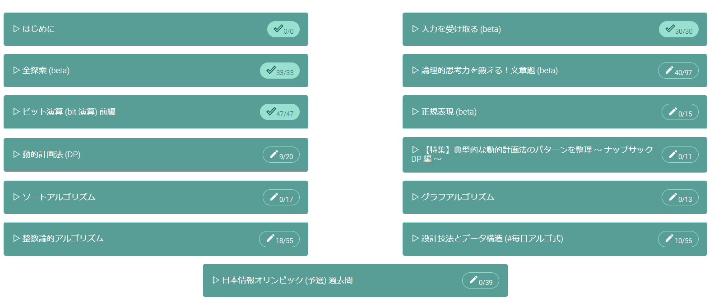

今週のケニア
ABC228
参加してません。今週中にVirtual Contestでやろうかと思っています。実はこのケニア、今まで一度もこの機能を使ったことがないんですよね。これがいい機会っぽいので試してみます。火曜日くらいならそれなりに時間あるかな？
アルゴ式

最近このブログで出てこないアルゴ式。今の自分の全体の状況はこんな感じ。こうやって見ると結構やってることがバラバラですね。のんびりやってた。二分探索も九九の問題で終わってしまうので次どうしようかなぁと思ったけど、また整数の方に戻ろうかと思ってます。面白そうなのが増えてるので。
後期もあと半分?
後期が始まったのがつい最近のような気持ちでいましたが、どうやらもう11月も2週間もないらしいです。
そんな馬鹿な……
後期前半だけの数理論理の最終テストの提出期限が迫ってることでそれに気が付きました。恐ろしすぎる。というか、今更ですけど少なくともこの大学の授業回数って意外と少ないんですね。他の大学の話を聞くと休みがない、課題がいっぱいとかで忙しそうなので自分は結構あまあまな生活を送ってるような気がします。とはいえ、授業を溜めて課題をする効率も遅すぎるような自分です。これ以上きつくなると厳しいのでこれくらいでちょうどいいです。
Javaのモチベーション
自分の大学の情報学部は1年生のときにJavaを習います。少し前までは授業も不親切だし授業で指定されたEclipseもいまいち使えないしで全くもってモチベーションがなかったのですが、最近ちょっとづつそうでもなくなってきたような気がします。特にEclipseのショートカットキーを使い始めてからはJavaでプログラムを書く時のストレスがものすごく減りました。1ヶ月前はテストでてんぱってたりしてましたが、最近は多少は冷静に対処できてると思っています。オブジェクト指向の基本的なところは一応教わったことになるので、折角だしSwingとかも使えるようになって何か作りたいですね。YouTubeで簡単なゲームを作る動画とカを少しづつまねしながらやっていこうかなと。じゃないと本当にやる気でない。テストだけだと残念ながら限界があります。後期からは同学科の友人たちとdiscordなどで相談しながらプログラミングに授業に取り組むようになったのは個人的には大きいのでそれも続けていきたいですね。
Pythonのモチベーション
実は授業で扱っていないPythonちゃん、授業で使わないので自分から使いに行かないと出番はないです。今まではほとんど競プロでしか使ってませんでしたが、出来る限り授業でも使っていきたいと思います。実際に微積の課題のグラフを書いたり、数理論理の答えの確認などで使いました。多分もっと使い道があるんだろうなぁと思いますが、大学に入る前はパソコンでYouTube見るだけの人間がここまで来ただけでもう自分は感動しています。涙が止まりません。夏休みに人工生命の本を買っていたものの個人的には少し難しくて途中までしか読んでいませんでしたが、また再開するのもいいかも……考え出すといろいろ出てきますね。考えるだけなら楽しいんですけどね。